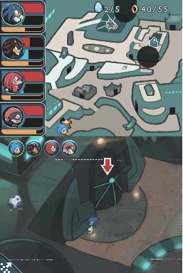

🏠 首頁
📁 SONIC 遊戲討論區
SCDB的CHAO蛋拿法
👤 darkspinesonic4
🕐 2009-05-14 14:05:18

附件: SONIC CHRONICLES 01.JPG
如圖，那顆CHAO蛋我怎麼跑都拿不到
各位已全破CHRONICLES的能否幫我一下??
THANX
👤 gmf327626228
🕐 2009-05-16 16:46:54
我記得是從最左邊的高臺上下去後用TAILS飛過去
👤 doidoi_go
🕐 2010-05-16 09:57:32
喔
這個我也找很久
是先上去左邊白色平台二階的階梯
在階梯附近可以飛過去右邊的屋子
再飛下去即可[附件 3672 未找到](如箭頭顯示，抱歉，畫很醜)